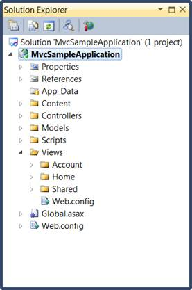
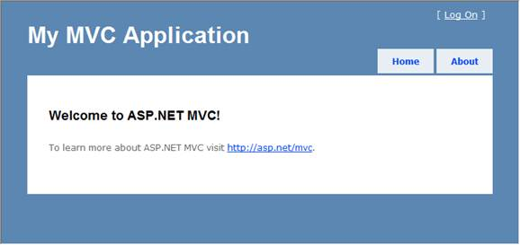

The following illustration shows the folder structure of a newly created MVC solution.

Figure 34: Solution Explorer
The folder structure of an MVC project differs from that of an ASP.NET Web site project. The MVC project contains the following folders:
· Content, this is for content support files. This folder contains the cascading style sheet (.css file) for the application.
· Controllers, which is for controller files. This folder contains the application's sample controllers, which are named as AccountController and HomeController. The AccountController class contains login logic for the application. The HomeController class contains logic that is called by default when the application starts.
· Models, which is for data-model files such as LINQ-to-SQL .dbml files or data-entity files.
· Scripts, which is for script files, such as those that support ASP.NET AJAX and jQuery.
· Views, which is for view page files. This folder contains three subfolders: Account, Home, and Shared. The Account folder contains views that are used as UI for logging in and changing passwords. The Home folder contains an Index view (the default starting page for the application) and an about page view. The Shared folder contains the master-page view for the application.
The newly generated MVC project is a complete application that you can compile and run without change. The following illustration shows what the application looks like when it runs in a browser:

Figure 35: MVC Application Output